21 Multidimensional Scaling (Ch.23)
21.1 Configurations in Different Numbers of Dimensions
Multidimensional scaling takes a distance/dissimilarity matrix and tries to fit the distances between points (where each point represents a case/row) to a space that has fewer dimensions than the original data. The number of dimensions of the original data is the number of variables, and those data can always be completely visualized in a number of dimensions that is one less than the number of variables. This is best understood by looking at an example iteratively. Suppose that the data from Ixcaquixtla had only three columns: a number for each household, and information about bowls as a % of sherds and decorated sherds as a % of sherds.
ixcaq <- read.csv("data/Drennan_datasets/Drennan_2009_Table21-1.csv", header=T)
ixcaq_3 <- ixcaq[,1:3]
head(ixcaq_3)## Household.Unit Bowls...of.Sherds Decoration...of.Sherds
## 1 1 0.25 0.03
## 2 2 0.37 0.07
## 3 3 0.15 0.01
## 4 4 0.19 0.01
## 5 5 0.35 0.04
## 6 6 0.21 0.01With such a dataset, it’s easy to visualize the data completely in two dimensions:
plot(ixcaq_3$Bowls...of.Sherds, ixcaq_3$Decoration...of.Sherds, pch=20)
text(ixcaq_3$Bowls...of.Sherds, ixcaq_3$Decoration...of.Sherds, labels =
ixcaq_3$Household.Unit, pos=2, cex=.75)
We can eyeball that plot to get a sense of distances between households; all that calculating a distance matrix will do is standardize the variables so that the distances that we’re examining better represent the (dis)similarity between the households, with respect to these two variables.
##
## Attaching package: 'MASS'## The following object is masked from 'package:dplyr':
##
## selectlibrary(cluster)
ixcaq_3_euclidean <- daisy(ixcaq_3[,-1], metric = "euclidean", stand=T)
ixcaq_3_mds <- isoMDS(ixcaq_3_euclidean, k=2) #k is the number of dimesnions## initial value 0.000000
## final value 0.000000
## convergedplot(ixcaq_3_mds$points[,1], ixcaq_3_mds$points[,2], xlab="Dimension 1",
ylab="Dimension 2", pch=20) #using the resulting points as x and y coords
All households are represented, and the location of each point displays all that is known about the values for each variable for each household. This is particularly clear if we label the points, and then can check all we know about each household at a glance - including which ones are more and less similar to one another.
plot(ixcaq_3_mds$points[,1], ixcaq_3_mds$points[,2], xlab="Dimension 1",
ylab="Dimension 2", pch=20)
text(ixcaq_3_mds$points[,1], ixcaq_3_mds$points[,2], labels=ixcaq_3$Household.Unit,
cex=.75, pos=2)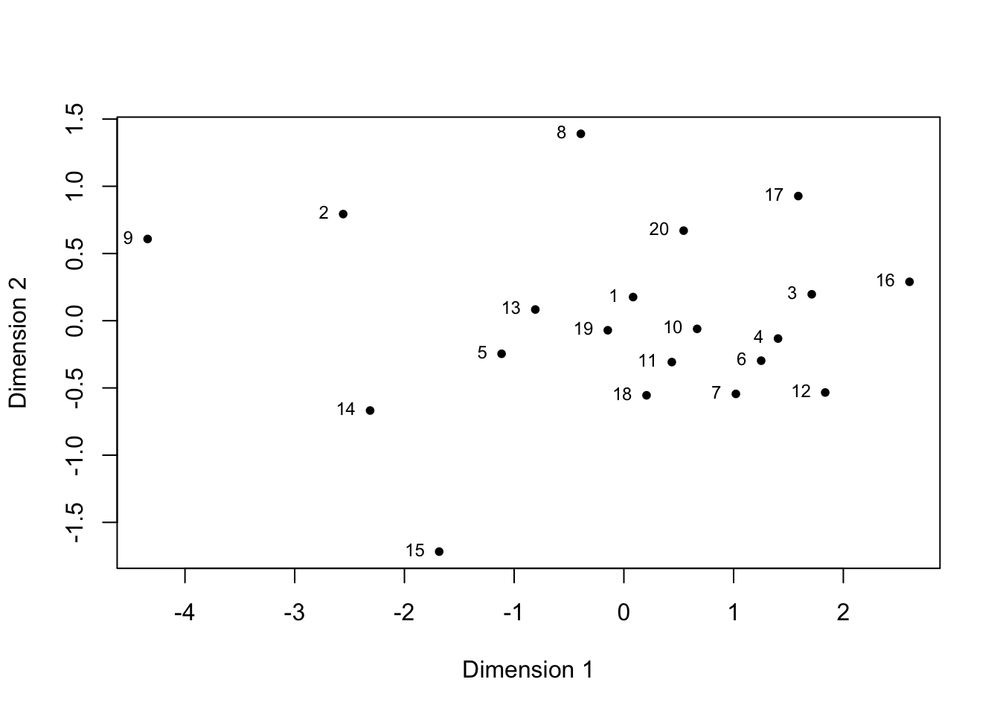
If we want to examine whether variability along one of these dimensions affects a third variable, we can tie the way in which points are displayed (symbol size is conventional).
plot(ixcaq_3_mds$points[,1], ixcaq_3_mds$points[,2], xlab="Dimension 1",
ylab="Dimension 2", pch=20, cex=ixcaq$Fauna.Sherd.Ratio*5)
text(ixcaq_3_mds$points[,1], ixcaq_3_mds$points[,2], labels=ixcaq_3$Household.Unit,
cex=.75, pos=2)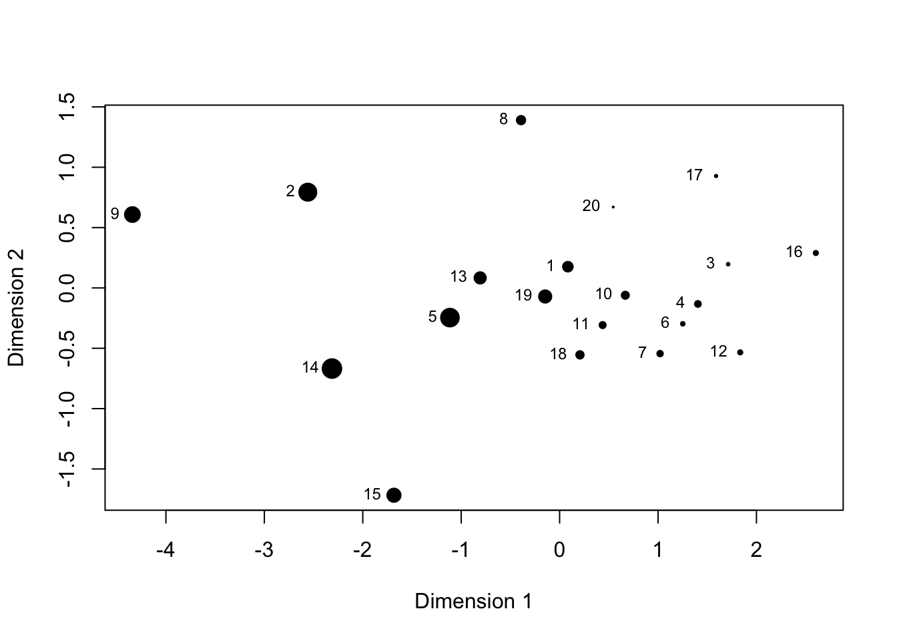
It’s immediately apparent that the fauna:sherd ratio varies along Dimension 1, which is bowls as a % of sherds. This kind of relationship between two variables could be much more efficiently explored with regression - but MDS comes into its own when each dimension is representing not a single variable but the combination of several.
In the case of data with more than two or three dimensions, we can’t manage very well to visualize the combinations of potential relationships. MDS plots the data in n dimensions using a distance matrix to determine where to plot the points, in the hope - this is always an exploratory process - that much of the variability can be captured by fewer (many fewer, ideally) than the total number of dimensions.
The results of MDS often look a mess, but - importantly - they are at least a little bit less a mess than the original data visualized in the maximum number of dimensions,
so that they are easier to visualize. At best, they can be a lot less a mess, and reveal interesting patterning. A key aspect to keep in mind when reading the resulting plots is that the dimensions plotted (on x, y, and z axes, usually) do not correspond to any particular variables. They represent aggregates of variables; if we want to consider how a particular variable behaves in the plotted space, we can do that by manipulating the way in which the points are plotted (changing their size according the value for each variable, by convention).
To follow Drennan’s example, we can use the Ixcaquixtla household data, first computing a distance matrix using Gower’s coefficient as we did in Ch.22:
ixcaq <- read.csv("data/Drennan_datasets/Drennan_2009_Table21-1.csv", header=T)
ixcaq$Energy.Invested.in.Burials <- dplyr::recode_factor(ixcaq$Energy.Invested.in.Burials,
`1` = "low", `2` = "medium", `3` = "high")
ixcaq_gower_dist <- daisy(ixcaq[,-1], metric = "gower", type =
list(ordratio = 3, asymm = c(4, 6)))We do not subtract from 1, this time, because the R functions that perform multidimensional scaling use a distance (or dissimilarity) matrix rather than a similarity matrix. Otherwise, ixcaq_gower_dist is a similarity matrix just like those that you’re familiar with already (as examining it will show).
## Dissimilarities :
## 1 2 3 4 5 6 7
## 2 0.28019670
## 3 0.48795322 0.59632111
## 4 0.16097156 0.29643142 0.37496544
## 5 0.18090444 0.10838317 0.60636098 0.30898126
## 6 0.41359252 0.53400128 0.30296692 0.29623768 0.54515670
## 7 0.13446139 0.41465809 0.39880516 0.17908194 0.31536583 0.31453912
## 8 0.23117790 0.31108220 0.50966587 0.16837553 0.35140982 0.44034926 0.34120747
## 9 0.34107855 0.09270003 0.63713184 0.33428695 0.20108320 0.57642257 0.47553994
## 10 0.12055755 0.25601741 0.39940191 0.04041401 0.26856725 0.31227820 0.18462753
## 11 0.48076901 0.58413690 0.38281579 0.42100824 0.59417677 0.27984887 0.52611590
## 12 0.21582935 0.38747342 0.33751196 0.12064726 0.36383905 0.25754668 0.10439427
## 13 0.42429104 0.46647310 0.54613095 0.41240611 0.47762851 0.30437029 0.54381228
## 14 0.49155237 0.39078682 0.36488570 0.58348751 0.34682881 0.62694352 0.59912148
## 15 0.21858553 0.13036118 0.56808480 0.26113603 0.12909523 0.50262760 0.35304692
## 16 0.41731939 0.53772816 0.17248272 0.28300549 0.54888357 0.39524230 0.31826599
## 17 0.32629320 0.46175306 0.37308134 0.19967836 0.47430290 0.32848767 0.24263590
## 18 0.32214248 0.52629984 0.20686337 0.40324296 0.44686603 0.44669897 0.36361377
## 19 0.20578150 0.27720037 0.34947236 0.20851645 0.28835578 0.43112082 0.32530273
## 20 0.16892943 0.44912613 0.41309676 0.23785553 0.34983386 0.35365099 0.09002359
## 8 9 10 11 12 13 14
## 2
## 3
## 4
## 5
## 6
## 7
## 8
## 9 0.34893773
## 10 0.15657994 0.29716241
## 11 0.39685008 0.62231606 0.39958612
## 12 0.28902279 0.44835526 0.15119285 0.50436816
## 13 0.30789817 0.50012246 0.38525448 0.20946900 0.51964812
## 14 0.59520813 0.42494684 0.55115630 0.53047927 0.62737374 0.56616816
## 15 0.33134237 0.12249302 0.22072202 0.55590058 0.32586224 0.45979078 0.38957868
## 16 0.43267263 0.57430149 0.31015713 0.46781845 0.22547109 0.62587045 0.51918660
## 17 0.20027612 0.49960859 0.20573565 0.44126555 0.16601940 0.44076219 0.71574482
## 18 0.49253934 0.57500532 0.37091175 0.35023472 0.44712919 0.48400442 0.23813929
## 19 0.27092209 0.31962166 0.17259289 0.33465657 0.30113858 0.40756768 0.39582270
## 20 0.35067551 0.51000797 0.24062334 0.57591255 0.14498604 0.57445053 0.62669591
## 15 16 17 18 19
## 2
## 3
## 4
## 5
## 6
## 7
## 8
## 9
## 10
## 11
## 12
## 13
## 14
## 15
## 16 0.50635448
## 17 0.42645767 0.27889184
## 18 0.47701090 0.33894205 0.53550027
## 19 0.24582669 0.26052779 0.35546902 0.29234583
## 20 0.38751495 0.35434757 0.22817717 0.41077884 0.35594099
##
## Metric : mixed ; Types = I, I, T, A, I, A, I, I, I, I
## Number of objects : 20The stress values that Drennan plots in Fig. 23.1 are a measure of how much it’s necessary to distort the distances between points in order to fit them into fewer dimensions than the maximum. If you plot the data using all the dimensions possible, you can fit the points exactly, and there is no stress in the system. As you begin to reduce the number of dimensions, some or all values have to be distorted in order to make the points fit; the stress value is a measure of how many, and how much. If you can get down to three dimensions or fewer, interpreting the results is much more manageable - but a given number of dimensions is only useful (i.e. interpretable) if the stress value is below ~.15. Examining the relationship between stress values and number of dimensions, as Drennan does in Fig. 23.1, is thus very useful.
Fig. 23.1 illustrates how the stress decreases as we go from fitting a single dimension to five. By using isoMDS() to calculate stress values for values of k (the number of dimensions) from 1:5, and plotting those against the number of dimensions, we can replicate the figure.
## initial value 44.519558
## iter 5 value 37.616970
## iter 10 value 36.185859
## iter 10 value 36.183391
## iter 10 value 36.153692
## final value 36.153692
## converged
## initial value 23.190072
## iter 5 value 18.499950
## iter 10 value 18.022501
## iter 10 value 18.015610
## final value 17.988665
## converged
## initial value 8.972759
## iter 5 value 7.452802
## iter 10 value 7.295544
## iter 15 value 6.988328
## final value 6.942117
## converged
## initial value 6.244180
## iter 5 value 4.362435
## iter 10 value 4.230386
## iter 15 value 4.168043
## final value 4.111417
## converged
## initial value 4.678066
## iter 5 value 2.752935
## iter 10 value 2.563587
## final value 2.546105
## convergedplot(1:5, stress/100, xlab="Dimensions", type="b") #isoMDS() returns stress in %, so stress/100 is needed to match Drennan's Fig. 23.1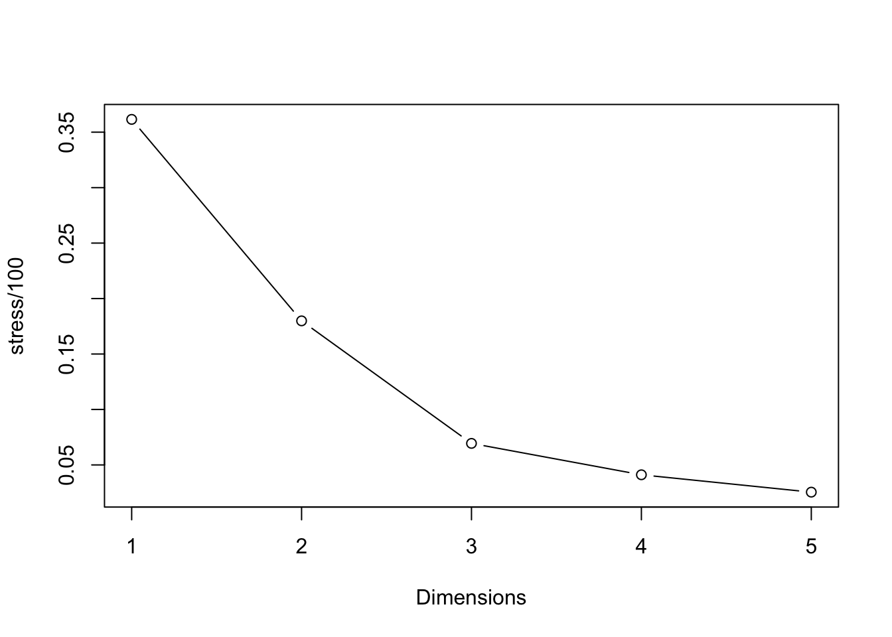
As Drennan points out, of note here are both the “elbow” in the plot, and the fact that the stress value drops below our rule-of-thumb threshold of .15 when using three dimensions. The relatively low stress value indicates that the points don’t have to be distorted too much to plot them in this number of dimensions, suggesting that anything we observe is likely reliable (that is, the result of real distances between cases). The elbow in the curve suggests that adding more dimensions will not improve the fit much, and since it will make the results significantly harder to interpret it’s probably not a great idea.
We can retrieve point coordinates like those that Drennan supplies in Table 23.1 from isoMDS() as well.
## initial value 8.972759
## iter 5 value 7.452802
## iter 10 value 7.295544
## iter 15 value 6.988328
## final value 6.942117
## converged## [,1] [,2] [,3]
## [1,] -0.07341974 -0.06839188 -0.0521612811
## [2,] -0.23354186 0.01871574 0.0436462585
## [3,] 0.21541445 0.12540005 -0.1220501367
## [4,] 0.01285007 -0.09152537 0.0165796376
## [5,] -0.21541876 0.01183554 -0.0524472916
## [6,] 0.22783608 -0.03048920 0.0981296898
## [7,] 0.02067468 -0.13448337 -0.1111965015
## [8,] -0.02848440 -0.11716087 0.1348687133
## [9,] -0.26542807 0.01413101 0.0761804660
## [10,] -0.01451863 -0.07944493 0.0171671242
## [11,] 0.16599729 0.15715791 0.1869859808
## [12,] 0.06701727 -0.13502847 -0.0612680019
## [13,] 0.05736416 0.08308255 0.2821797715
## [14,] -0.11022185 0.31358931 -0.0928984067
## [15,] -0.19841615 -0.00870409 0.0111238696
## [16,] 0.18633467 0.00371969 -0.1541862896
## [17,] 0.10477091 -0.18518929 0.0339057356
## [18,] 0.07802264 0.21087025 -0.1120781430
## [19,] -0.02506639 0.07225320 0.0008726765
## [20,] 0.02823365 -0.16033777 -0.1433538714Comparing this to Table 23.1, you’ll note that the results definitely do not match. Why not? Because MDS solutions (the fitting of the points) are not unique. What matters are the distances between alll the points - their relative positions - and not their locations (i.e., the coordinates in Table 23.1).
To compare our MDS results to Drennan’s, then, we need to look at the relationships, not the coordinates. First we load Drennan’s table, and then we can use cor() (check ?cor) to compare them.
ixcaq_MDS3_Drennan <- read.csv("data/Drennan_datasets/ixcaq_MDS3_Drennan_Table23-1.csv")
cor(ixcaq_MDS3_Drennan, ixcaq_MDS3)## [,1] [,2] [,3]
## X 0.17669935 0.11066632 -0.12946945
## Dim1 0.99678705 -0.04603332 -0.09326910
## Dim2 -0.03654536 -0.99616825 -0.08106811
## Dim3 -0.05126347 0.06210905 -0.98828912The dimensions from Drennan’s Table 23.1 are labeled ‘Dim1’, ‘Dim2’, and ‘Dim3’; because we haven’t named our columns they simply appear as [,1] , [,2], and [,3]. The diagonal of the correlation matrix produced by cor() gives the correlations between [,1] and Dim1, [,2]
and Dim2, and [,3] and Dim3 (i.e., where those intersect). The correlations are near-perfect (~.99), indicating that the difference between our MDS results and Drennan’s are more apparent than real. The fact that the correlations between [,2] and Dim2 and [,3] and Dim3 are negative indicates that our MDS solution is flipped in the second and third dimensions, relative to Drennan’s. This is nothing to be alarmed about; remember that it’s the relative positions of the points that matter. In order to produce plots that closely match Drennan’s going forward, we can invert the values in our second and third dimensions. We’ll append these to the original Ixcaquixtla household data to simplify the process of examining those variables in our MDS plots.
21.2 Interpreting the Configuration
You can probably see that all the data for producing Figures 23.3 through 23.12 are now present in ixcaq_MDS3d: we’ll use the values in Dimensions 1, 2, and 3 to make bivariate plots of points, and use the variables from the original Ixcaquixtla data to control the scaling of the points so that we can examine how each variable varies with respect to the three dimensions of our MDS results.
With a little imagination you can probably also see how tedious it would be to produce three plots for each of 10 variables. In order to avoid that, we’ll build a little function that plots three side-by-side plots and scales the points according to the variable that we specify.
MDSplot <- function (dataset, sizevar) {
dataset <- dataset %>% mutate_if (is.factor, as.numeric) #change any factors to numbers
multiplier <- 3/sapply(dataset, max) #calculate scalar factor for points
par(mfrow=c(1,3)) # set our plotting space to accommodate three plots (1 row, 3 columns)
plot(dataset$Dimension2, dataset$Dimension1, xlab = "Dimension 2", ylab = "Dimension 1",
cex = .25 + dataset[,sizevar]*multiplier[sizevar], pch = 20, asp = 1)
plot(dataset$Dimension1, dataset$Dimension3, xlab = "Dimension 1", ylab = "Dimension 3",
cex = .25 + dataset[,sizevar]*multiplier[sizevar], pch=20, asp=1, main =
paste("Point size scaled to\n", colnames(dataset)[sizevar]))
plot(dataset$Dimension2, dataset$Dimension3, xlab = "Dimension 2", ylab = "Dimension 3",
cex = .25 + dataset[,sizevar]*multiplier[sizevar], pch=20, asp=1)
par(mfrow=c(1,1)) #return par to normal
}
MDSplot(ixcaq_MDS3d, sizevar=2)
We can then automate the process of applying this function to all 10 variables.
i <- 2 #start with 2 because the first column is just an ID# for each household
for (i in (2:11)) {
MDSplot(ixcaq_MDS3d, sizevar=i)
}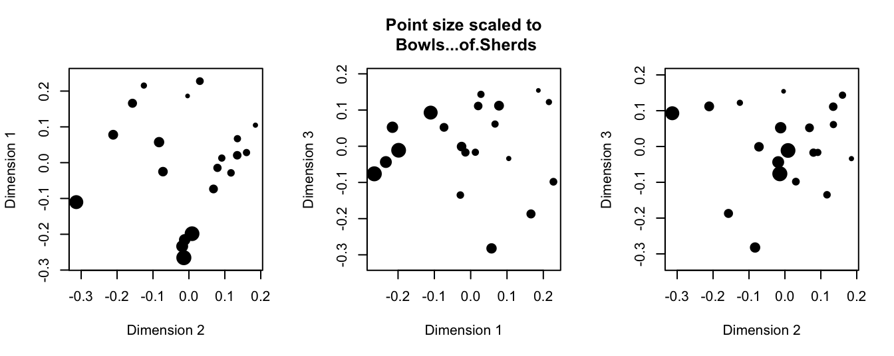
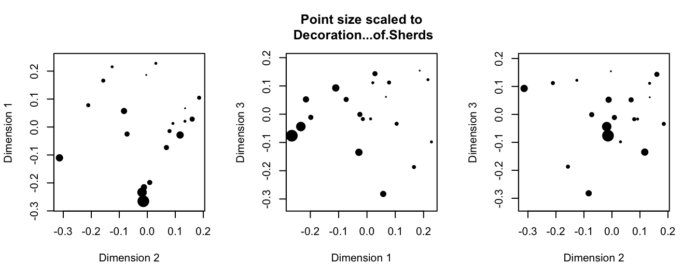
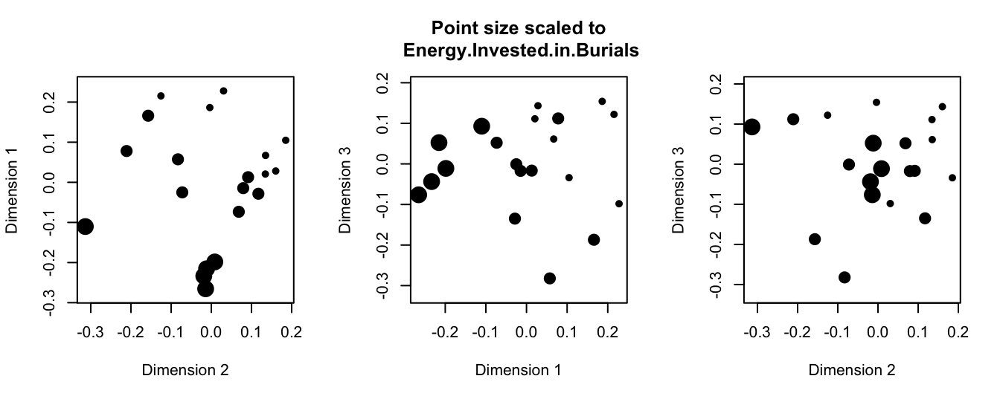
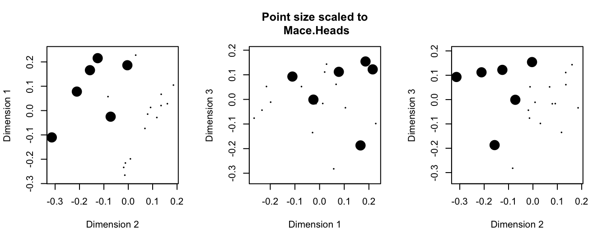
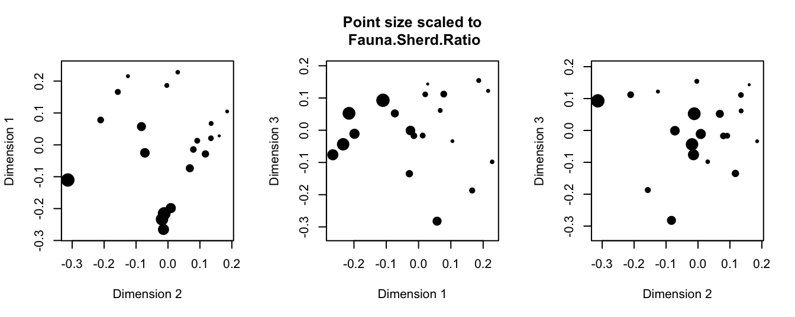
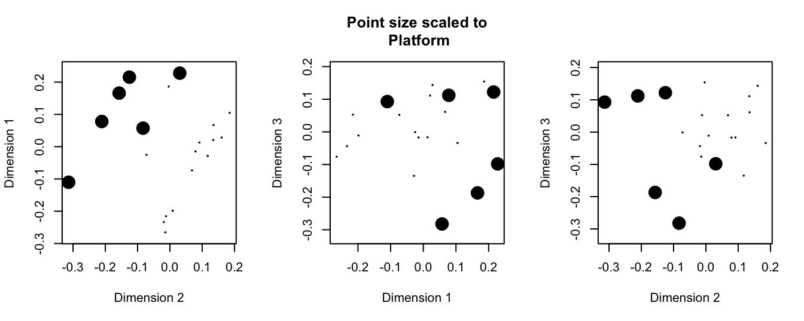
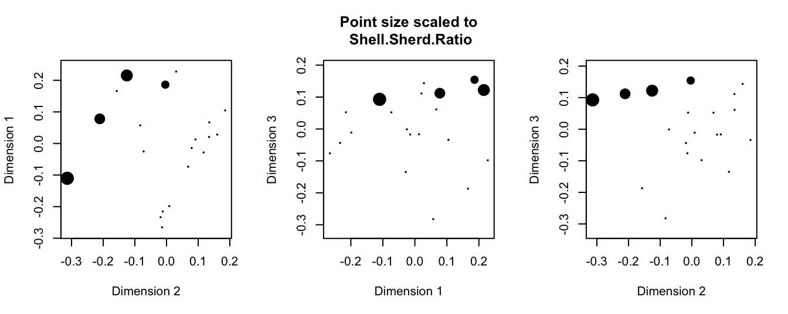
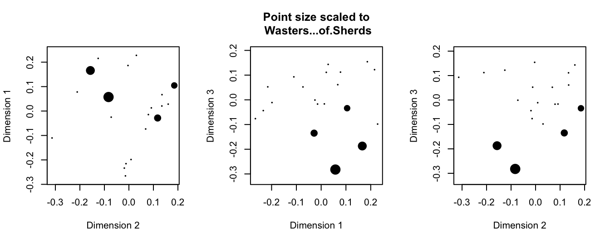
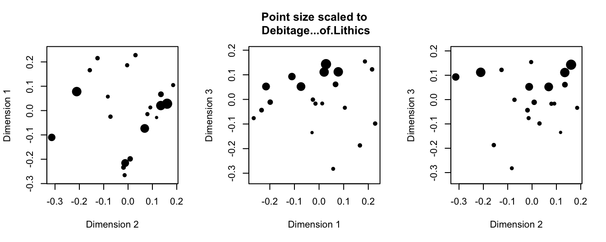
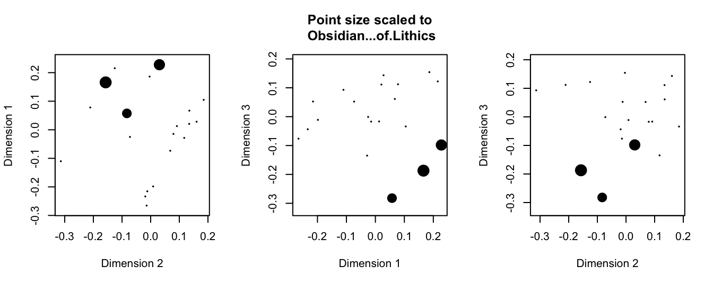
Voila: we have reproduced all of Drennan’s Figures 23.3 through 23.12. The lines and ellipses that Drennan adds are just scribbled annotations, not the result of calculations. You could use segments() and plotrix::draw.ellipse() and eyeball the coordinates if you wanted to add them to any particular plot; text() can be used to label the points (with, e.g., the number of each household). If the headings bother you, the simplest way to make them more intuitively interpretable would be to go back to our ixcaq_MDS3d object and change the column names (using colnames()) before plotting.
We can produce Figure 23.13 by plotting our MDS results, labeling the households by number and adding some additional detail. Note that once we change mfrow so that we have a plotting space that consists of one row and three columns (i.e., three panels in which to plot), every time we call plot() we will begin plotting in a new panel.
library(plotrix)
par(mfrow=c(1,3)) # set our plotting space to accommodate three plots (1 row, 3 columns)
#first panel
plot(ixcaq_MDS3d$Dimension2, ixcaq_MDS3d$Dimension1, xlab = "Dimension 2", ylab =
"Dimension 1", cex = .01, pch = 20, asp = 1)
text(ixcaq_MDS3d$Dimension2, ixcaq_MDS3d$Dimension1, labels = ixcaq_MDS3d$Household.Unit,
cex=.7)
arrows(x0 = .15, y0 = .25, x1 = -.25 , y1 = -.25)
arrows(x0 = .15, y0 = -.15, x1 = -.2 , y1 = .125)
text(x = -.225, y = -.19, labels = "WEALTH?", srt=52, adj = c(0,0), cex=.8)
text(x = -.1, y = .065, labels = "PRESTIGE?", srt=-38, adj = c(0,0), cex=.8)
#second panel
plot(ixcaq_MDS3d$Dimension1, ixcaq_MDS3d$Dimension3, xlab = "Dimension 1", ylab =
"Dimension 3", cex = .01, pch=20, asp=1)
text(ixcaq_MDS3d$Dimension1, ixcaq_MDS3d$Dimension3, labels = ixcaq_MDS3d$Household.Unit,
cex=.7)
draw.ellipse(x = -.08, y = .08, a = .18, b = .08, angle = 25)
draw.ellipse(x = .15, y = -.175, a = .15, b = .05, angle = 50, xpd=T)
draw.ellipse(x = .07, y = -.15, a = .15, b = .11, angle = 75)
text(x = c(-.15,-.1,.225), y = c(.15,-.15,-.025), labels =
c("DEBITAGE", "KILN WASTERS", "OBSIDIAN"), cex=.8, xpd=T) #xpd=T to plot into margins
#third panel
plot(ixcaq_MDS3d$Dimension2, ixcaq_MDS3d$Dimension3, xlab = "Dimension 2", ylab =
"Dimension 3", cex = .01, pch=20, asp=1)
text(ixcaq_MDS3d$Dimension2, ixcaq_MDS3d$Dimension3, labels = ixcaq_MDS3d$Household.Unit,
cex=.7)
draw.ellipse(x = -.15, y = .125, a = .165, b = .05, angle = 10, xpd=T)
draw.ellipse(x = -.06, y = -.195, a = .14, b = .08, angle = 40)
text(x = c(-.225,-.25), y = c(.025,-.15), labels = c("SHELL", "OBSIDIAN"), cex=.8)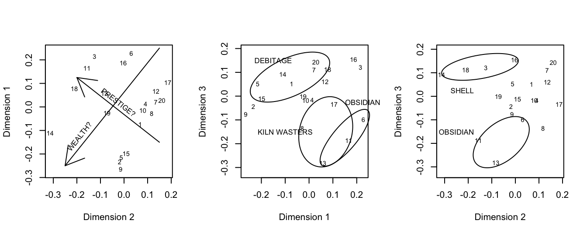